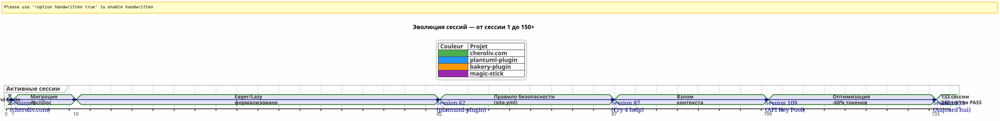
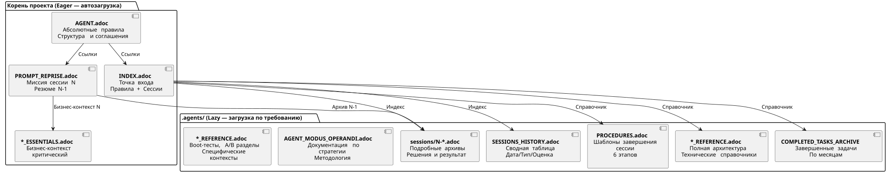

Управление ИИ-агентом с помощью AsciiDoc: моя стратегия Eager/Lazy для сессий Opencode без утечки контекста
Опубликовано 24 April 2026
Резюме
Когда мы работаем с ИИ-агентом, таким как Opencode, над сложными проектами в нескольких сессиях, мы сталкиваемся с фундаментальной проблемой:утечка контекста. Агент не помнит предыдущую сессию. Все, что ему объяснили — архитектура, соглашения, состояние бэклога — утеряно. Восстановление этого контекста в каждой сессии является дорогим, медленным и источником ошибок.
Эта статья излагает ремесленную стратегию, которую я построил для решения этой проблемы: устойчивая система управления, основанная на файлах AsciiDoc, с дихотомиейЖадный/Ленивыйдля оптимизации потребления токена контекста, и однаобязательная процедура завершения сеансадля обеспечения непрерывности.
Сцена: понедельник, 21 апреля, 9:00
Я снова открываю Opencode, чтобы продолжить работу над моим плагином Gradle`plantuml-plugin`. Вчера вечером я провел три часа, обсуждая с агентом архитектуры пула ключей API — ротация round-robin, управление квотами, автоматический откат. Сегодня утром агент смотрит на меня глазами золотой рыбки.
__ — Привет, я ваш помощник Opencode. Как я могу вам помочь сегодня ? (Empty output)
Нет — Ах да, пул ключей API, мы находились в структуре YAML. Нет — Внимание,PlantumlManager`является объектом-одиночкой Kotlin, а не классом. Нет — Нет, мы решили вчера что`SyntaxValidationResult`оставался один вложенный sealed класс в`PlantumlService.
Всё нужно переделать. А точнее: всё нужно переобъяснить. Я собираюсь потратить первые двадцать минут своей сессии на восстановление контекста, который агент уже имел в руках вчера. Двадцать минут сожженных токенов. Двадцать минут, когда я мог бы писать код, но вместо этого я занимаюсь обязательным обучением.
Это не баг Opencode. Это сама природа разговорных LLM: между сеансами рабочая память естьполностью стёрта. Агент не помнит предыдущую миссию, принятые решения, выявленные ловушки, код, который мы вместе написали.
Я пережил это десятки раз. На четырёх одновременных проектах. С сессиями, которые следуют одна за другой в течение недель. Я посчитал: в среднем,30–40 % времени сеансабыл посвящён переконтекстуализации агента. На сессии 87 проекта`plantuml-plugin`, я сорвался. Я больше не мог позволить себе объяснять в десятый раз, что`AttemptEntry`является топ-уровневым классом данных в`DiagramProcessor.kt`.
Мне нужна была система. Не хак. Настоящее управление.
Бытие: От хаоса к методике
Первые сессии: Тёмный век
Мой первый проект с Opencode,plantuml-plugin, стартовав без какого-либо управления. Я задаю вопрос, агент отвечает, мы итерируем, сессия заканчивается, и на следующий день мы начинаем с нуля. Это была сессия 1, затем 2, затем 3… до сессии 62, когда я осознал, что потерял накопившиеся часы, переобъясняя одну и ту же архитектуру.
На сессии 62 цифры есть :198 юнит-тестов проходят, 42 функциональных теста успешно пройдены, плагин работает. Но когнитивные затраты невыносимы. Каждая новая сессия начинается с двадцатиминутного монолога о структуре проекта.
Эпизод site.yml уничтожен (Сессия 2, bakery-plugin)
Метод также рождается из катастрофы. О проекте`bakery-gradle`, на сессии 2, я прошу агента изменить файл`site.yml`. Агент, не проверяя, является ли файл версионированным, делает`Write`полностью перезаписывает содержимое. Результат: реальные токены (ключи API Firebase, секреты развертывания) заменяются фиктивными заполнителями. Файл не был в git — он был в`.gitignore`для защиты секретов.
Без резервного копирования. Без`git restore`возможно. Я застрял. Мне нужно вручную восстановить файл конфигурации, найти токены в моих менеджерах паролей, всё снова собрать.
Из этой фрустрации рождаетсяАбсолютное правило 1b:
_ Никогда не раздавливатьфайл конфигурации с`Write`полный когда один`Edit`частично достаточно.НИКОГДА не заменятьчувствительных значений фиктивными значениямиПроверить git check-ignore и `git ls-filesперед любой модификацией. _
Это правило, сегодня выгравированное в мраморе всех моих файлов`AGENT.adoc` et `INDEX.adoc`на четырёх проектах, возникла из-за реальной ошибки, которая стоила мне час ручной работы.
Миграция Markdown → AsciiDoc (Сессия 1, cheroliv.com)
25 апреля 2026 года, на`cheroliv.com`, я принимаю радикальное решение: перевести всю governance Markdown в AsciiDoc. Это не эстетично. Это функционально. AsciiDoc предоставляет семантическую структуру, которую LLM читают лучше: иерархические разделы, типизированные таблицы, замечания (NOTE, WARNING, CAUTION), машинно-читаемые атрибуты документа.
Сессия 1`cheroliv.com`формализует структуру :
-
Преобразование`AGENTS.md` en
AGENT.adoc -
Создание специализированных агентов :`CODER.adoc`,
SCRUM_MASTER.adoc,PLANTUML_DESIGNER.adoc -
Создание структуры Eager/Lazy:`INDEX.adoc`,
SESSIONS_HISTORY.adoc,AGENT_SESSION_MANAGER.adoc,SESSION_CHECKLIST.adoc,PROCEDURES.adoc
Один коммит:`90975e9 refactor: migrate agent governance from Markdown to AsciiDoc`. И сайт продолжает работать.

Временная линия выше иллюстрирует реальное развитие. Точка перелома — это сессия 87: именно здесь повторяющаяся фрустрация от повторного контекстуализирования превышает порог терпимости, и метод Eager/Lazy перестаёт быть идеей, становясь необходимостью.
Стратегия: Eager/Lazy в глубине
Философия: Информационный кеш, применённый к познанию
Мой подход напрямую вдохновлен управлением кэшем в информатике. Всё, чтокритически важный и часто используемыйдолжен быть сразу доступеннетерпеливый). Все, что естьконтекстный или объёмныйдолжен загружаться по запросу (Ленивый).
Eager (Панель управления) |
Ленивый (Руководство владельца) |
размер |
< 100 строк, < 10k токенов |
Неограниченный, детальный |
Загрузка |
Авто, в начале сессии |
По запросу агента |
Содержание |
Абсолютные правила, текущая миссия, критическое состояние |
Архивы сессий, полная история, подробные процедуры, технические ссылки |
Роль |
Немедленно ориентировать агента |
Отвечать на вопросы глубокого контекста |
Жадные файлы: Панель управления
Эти файлы находятся в корне каждого проекта и загружаются автоматически агентом в начале каждой сессии. Они составляютприборная панель-- критическая информация, мгновенно доступная.

AGENT.adoc-- Главный файл. На`cheroliv.com`, он состоит из 200 строк и содержит :
-
Абсолютные правила проекта (не коммитить без разрешения, не`rm`без подтверждения)
-
Структура проекта и соглашения по коду
-
Основные команды`./gradlew serve`,
./gradlew test) -
Эпики и продуктовый бэклог (приоритизированные пользовательские истории)
-
Трансверсальные критерии качества (доступность, адаптивность, совместимость)
На`bakery-plugin`, Правило 0 отличается :./gradlew -q publishToMavenLocal` обязателен после каждой модификации исходного кода. Потому что тестирование плагина без повторной публикации локального JAR заняло у меня час на отладку кода, который ещё не был упакован.
PROMPT_REPRISE.adocМиссия текущей сессии. Обновляется в конце каждой сессии, он содержит:
-
Номер сессии и приоритетная миссия
-
Резюме предыдущего сеанса (что было сделано, что осталось сделать)
-
Критерии приемки текущей сессии
-
Специфические технические напоминания
.agents/INDEX.adocТочка входа. Он резюмирует абсолютные правила, недавние сессии и особенно leпортфель проектовУправляются той же методологией. На сегодняшний день там перечислены пять проектов :
----
----
----
| magic-stick | Session 23 | SCRIPT_VERIFICATION.adoc | 2026-04-27 |
| bakery-gradle | Session 11 | TEST_COVERAGE_ANALYSIS | 2026-04-27 |
| cheroliv.com | Session 9 | TEST_COVERAGE_ANALYSIS | 2026-04-27 |
| plantuml-gradle| Session 133| TEST_COVERAGE_ANALYSIS | 2026-04-23 |
| jhipster-gradle-plugins | Session 1 | TEST_COVERAGE_ANALYSIS | 2026-04-28 |
----
**`*_ESSENTIALS.adoc`** -- Недавнее добавление (Сессия 109, plantuml-plugin) для дальнейшей оптимизации контекста Eager. Вместо загрузки 200 строк делового контекста в пул ключей API я загружаю 50 строк основного, а остальные 150 строк остаются в LAZY в`*_REFERENCE.adoc`.
Измеренный результат: переход от**~25k токенов EAGER до ~10k токенов**(прирост 60%). Агент больше не нуждается в энергозатратных напоминаниях.
==== Отсутствующее звено : `opencode.json
Мне нужно вам признаться в том, что я чуть не забыл задокументировать. Над всеми этими файлами .adoc есть крошечный JSON-файл, без которого ничего не работает. Он называется`opencode.json`и он занимает шесть строк. буквально шесть строк.
[source,json]
----
{
"$schema": "https://opencode.ai/config.json",
"instructions": [
"AGENT.adoc"
]
}
----
Этот файл говорит Opencode: «При запуске, загрузить`AGENT.adoc` автоматически. » Без него агент — это чистый лист, точно как я описывал в начале статьи. С ним у агента уже в руках абсолютные правила, архитектура проекта и основные команды — даже до того, как я скажу привет.
Я случайно обнаружил важность этого файла. На`bakery-plugin`, его не существовало. Я задавался вопросом, почему агент был систематически более «потерян» в этом проекте по сравнению с другими. Абсолютные правила хорошо находились в`AGENT.adoc`— но`AGENT.adoc`никогда не загружался. Агент читал только то, что я ему говорил прочитать, вручную, в каждой сессии. Это была 11-я сессия`bakery-plugin`Когда я понял отсутствие`opencode.json`. Я создал его — и сессия 12 началась как все остальные.
Этот файл теперь для меня настолько очевиден, что я даже больше не думаю о нём. Это классическая ошибка разработчика, который слишком хорошо знает свой инструмент. Сегодня я создаю его систематически *avant*`AGENT.adoc`. Это первый камень.
==== Дуальность `INDEX.adoc
Ещё одна тонкость, требующая уточнения:`INDEX.adoc`живёт в`.agents/`— это дело, которое я представил как LAZY. Однако я включаю его в список EAGER во всех моих таблицах. Здесь есть явное напряжение.
Полевая реальность: файлы`.agents/INDEX.adoc`Автоматически загружаются корректно в начале сессии, наравне с`AGENT.adoc` et `PROMPT_REPRISE.adoc`. Они находятся в`.agents/`из-за причин организации — не заполнять корень — но их поведение EAGER.
На`plantuml-plugin`, `INDEX.adoc`Он состоит из 200 строк и содержит абсолютные правила *полные* с их историей (уроки прошедших сессий), EPICs с оценками и портфель проектов. Это документ, который агент консультирует, чтобы узнать « где мы находимся ». На`bakery-plugin`, он делает 150 строк с дорожной картой и недавними сессиями.
Добровольная избыточность между`AGENT.adoc` et `INDEX.adoc`peut удивить. Абсолютные правила присутствуют в обоих. Почему ? Потому что они выполняют две разные роли : в`AGENT.adoc`, они являются *объяснительные* (рассказывание о правиле, извлечённый урок) ; в`INDEX.adoc`, они *исполнительные* (голое правило, без обоснования, для быстрой консультации). Агент читает`AGENT.adoc`один раз для *понимания*; он перечитывает`INDEX.adoc`на каждой сессии для *применять*. Два использования, два формата.
[plantuml, format=svg, id=diag-dualite-agent-index, alt="Comparaison entre AGENT.adoc (narratif) et INDEX.adoc (exécutif)"]
----
@startuml
skinparam backgroundColor #FEFEFE
skinparam defaultTextAlignment center
title Двойственность AGENT.adoc ←→ INDEX.adoc
left to right direction
rectangle "AGENT.adoc\n(Корень — EAGER)" as AGENT #E3F2FD {
rectangle "📖 **Нарративный формат**\nСторителлинг правила\nИзвлечённый урок, контекст" as NARR
rectangle "🏗️ **Полная архитектура**\nСтруктура проекта, компоненты\nПодробный бэклог US" as ARCHI
rectangle "📋 **Объяснительные правила**\nПочему правило существует\nИстория инцидента" as EXPL
}
rectangle "INDEX.adoc\n(.agents/ — EAGER)" as INDEX #E8F5E9 {
rectangle "⚡ **Исполнительный формат**\nОбнажённое правило, без оправдания\nБыстрая консультация" as EXEC
rectangle "📊 **Roadmap & EPICs**\nСводная таблица\nПрогресс, Оценка, Приоритет" as ROAD
rectangle "🌐 **Портфель проектов**\nПоперечный вид\n5 синхронных проектов" as PORT
}
AGENT --> INDEX : "Агент читает AGENT.adoc\n1 раз, чтобы **понять**"
INDEX --> AGENT : "Агент прочитал INDEX.adoc\nкаждая сессия для **применения**"
note bottom of AGENT
Taille max : 200 lignes
end note
note bottom of INDEX
Taille max : 200 lignes
Source de vérité en cas de divergence
end note
@enduml
----
Эта принятая избыточность — выбор дизайна. Она потребляет ~50 дополнительных строк токенов EAGER — но она гарантирует, что агент всегда имеет правила перед глазами, даже в кратком формате, который облегчает немедленное подчинение.
=== Файлы LAZY: Руководство владельца
Эти файлы живут в`.agents/`и читаются только тогда, когда агент в них нуждается. Они составляют истинное богатство метода, поскольку накапливают знания о проекте, не загрязняя текущий контекст.
[plantuml, format=svg, id=diag-agents-tree, alt="Arborescence complète du dossier .agents/"]
----
@startuml
skinparam folderBackgroundColor #E3F2FD
skinparam folderBorderColor #1565C0
skinparam fileBackgroundColor #FFF3E0
skinparam fileBorderColor #EF6C00
folder ".agents/" as ROOT {
file "INDEX.adoc\n(EAGER -- 200 строк)" as IDX #E8F5E9
file "AGENT_SESSION_MANAGER.adoc\n(Шаблон сессии)" as ASM
file "SESSION_CHECKLIST.adoc\n(Когда менять)" as CHK
file "PROCEDURES.adoc\n(6 шагов + LAZY/EAGER)" as PRO
file "SESSIONS_HISTORY.adoc\n(Все сессии)" as HIS
folder "сессии/" as SESS {
file "1-chore-migration.adoc" as S1
file "109-формализация-lazy.adoc" as S109 #FFECB3
file "133-epic11-article.adoc" as S133
file "... +130 других" as SMORE
}
folder "архивы/" as ARCH {
file "COMPLETED_TASKS_2026-04.adoc" as CTA
file "SESSIONS_HISTORY_83-95.adoc" as SHIST
folder "сводки_сессий/" as SUM {
file "SESSION_64_SUMMARY.adoc" as SU64
file "SESSION_73_SUMMARY.adoc" as SU73
file "..." as SUMORE
}
folder "prompts_archive/" as PARCH {
file "PROMPT_REPRISE_S65.adoc" as PR65
file "PROMPT_REPRISE_S75.adoc" as PR75
file "..." as PMORE
}
}
}
IDX --> SESS : "Индексирует"
IDX --> HIS : "Индексирует"
IDX --> ARCH : "Ссылка"
note right of S109
Session 109 =
Formalisation stratégie
LAZY/EAGER
Token : ~25k → ~10k
end note
@enduml
----
Дерево каталогов, приведённое выше, показывает реальную структуру папки`.agents/`на`plantuml-plugin`, самый зрелый проект. Обратите внимание на глубину в три слоя: корневые файлы (метаданные), директория`sessions/`(хронологические архивы), и дело`archives/`(агрегации и резюме). Именно эта глубина превращает управление из простого TODO-файла в**полная организационная память**.
**.agents/sessions/{N}-{titre}.adoc**-- Подробные архивы каждой сессии. В настоящее время:
* `plantuml-plugin`:**133 архивированных сессий**(от сессии 1 до 133)
* `bakery-plugin` : **11 сессий**
* `magic-stick` : **23 сеансов**
* `cheroliv.com`:**9 формальных сессий**+ 7 сеансов пре-системы восстановленных ретроактивно
Каждый архив содержит полный контекст сессии, принятые решения, возникшие проблемы и их решение, выполненные команды и их вывод.
**.agents/SESSIONS_HISTORY.adoc**-- Таблица с подведением итогов всех сессий с оценкой. Пример на`cheroliv.com`:
----
| -6 | 2025-05 | chore | Initialisation projet Gradle/JBake | 7/10 | 1 | 2026-04-25 | chore | Migration gouvernance agent | 8/10 | 7 | 2026-04-27 | debug/fix | Correction publishSite | 9/10 | 8 | 2026-04-27 | analyse | Analyse article 0108 | 7/10
**.agents/COMPLETED_TASKS_ARCHIVE_{mois}.adoc**-- Выполненные задачи архивируются по месяцам, чтобы не перегружать активный бэклог. Когда пользовательская история завершается, она перемещается сюда. Бэклог остаётся читаемым: максимум 10 активных элементов.
**.agents/PROCEDURES.adoc**-- Подробные шаблоны процедуры завершения сеанса. Длинный, но читается один раз агентом, когда он изучает метод. Затем процедура становится механической.
**.agents/AGENT_MODUS_OPERANDI.adoc**-- Полная стратегическая документация. О`plantuml-plugin`, этот файл делает**900+ строк**и на самом деле называется`AGENT_METHODOLOGIES.adoc`— я изменил название между написанием этой статьи и её эффективным внедрением. Такое расхождение в наименовании неизбежно в ремесленной системе, которая развивается. Главное — соглашение о наименовании: если файл документирует *méthode*, он начинается с`AGENT_`или явный префикс. Он документирует методологию Eager/Lazy, шаблоны, которым следует следовать, и антипаттерны, которых следует избегать. Он LAZY, потому что агенту не нужно перечитывать всю стратегию при каждой сессии, только когда есть неоднозначность.
**`*_REFERENCE.adoc`** -- Технические ссылки, специфичные для проекта. На`magic-stick`, два плотных файла LAZY :
* `AB_PARTITION_REFERENCE.adoc`(147 строк) -- Архитектура разделения A/B GPT, скрипты`update-system.sh`, оценённые размеры, механизм отката
* `BOOT_TEST_REFERENCE.adoc`(144 строк) -- Процедура QEMU + VNC для тестирования загрузки ISO без физического оборудования, чек-лист BIOS/UEFI, ограничения CI/CD
На`plantuml-plugin`:
* `ARCHITECTURE.adoc`(134 строк) -- Структура 11 классов данных, моменты внимания (подводные камни, которых следует избегать), оптимизированные команды тестирования
* `API_KEY_POOL_REFERENCE.adoc`-- Полные сведения о пуле ключей (LAZY пока`ESSENTIALS`является EAGER)
== Специализированные агенты: виртуальная команда
Управление не ограничивается пассивными файлами. Я формализовал некоторые**роли специализированных агентов**в специализированных файлах LAZY, которые определяют ожидаемый рабочий процесс в зависимости от типа задачи.
|===
|Агент |Файл |Роль |Проект |**кодировать** |`CODER.adoc` |Реализация FTL/CSS/JS, семантические теги, критерии доступности |cheroliv.com |**Скрам-мастер** |`SCRUM_MASTER.adoc` |Планирование США, разбивка на подзадачи, обнаружение зависимостей |cheroliv.com |**PlantUML дизайнер** |`PLANTUML_DESIGNER.adoc` |Создание диаграмм, синтаксис PUML, интеграция JBake |cheroliv.com
|===
Файл`CODER.adoc`на`cheroliv.com`содержит конкретные правила : _одно только`<h1>`par page_, _Префиксировать пути с`${content.rootpath}`_, _Объявить язык`<html lang="${content.lang!"fr"}">`_. Эти конвенции, написанные один раз, автоматически соблюдаются агентом начиная с сессии 1.
Файл`SCRUM_MASTER.adoc`накладывает структуру результата :**цель**, **Задачи**(координаты с назначением),**Критерии приемки**, **Риски**Когда я запрашиваю план действий, агент создаёт эту структуру без моего запроса. Управление**программа**агент.
==== Когда специализированные агенты становятся незаменимыми
Создание специализированных агентов следует естественной кривой. В начале проекта вам это не нужно —`AGENT.adoc`достаточно. Но когда проект растёт (допустим, более 20 сессий), два сигнала должны вас насторожить :
1. Агент смешивает конвенции двух разных областей (например: синтаксис PlantUML и правила CSS)
2. Вы тратите больше времени на поправку агента по поводу конвенций, которые вы уже объясняли ему пять раз.
на`cheroliv.com`, это произошло на сессии... 1. Да, с самого начала. Потому что этот проект — веб-сайт с тремя языками (FTL, CSS, JS), содержимым AsciiDoc и диаграммами PlantUML — три области, которые не имеют ничего общего. Агент CODER должен знать размеры шрифтов и медиа-запросы; агент PLANTUML_DESIGNER должен знать синтаксис`@startuml`Без разделения агент CODER предлагал мне диаграммы, и наоборот. Хаос.
на`jhipster-gradle-plugins`, я создал двух специализированных агентов, адаптированных для разработки плагинов Gradle :`PLUGIN_DEVELOPER.adoc` et `BACKLOG_MANAGER.adoc`. Первый кодирует все соглашения Kotlin/Gradle (не`!!`, data classes для моделей,`@TaskAction`pour задач). Второй знает что`persistence`должен быть стабильным до того как`assistant`не начинает свою разработку — критическая зависимость в монорепозитории.
Ошибка, которую не следует совершать: создавать слишком много агентов слишком рано.`plantuml-plugin`ждал сессию 108, прежде чем формализовать специализированный агент для пула ключей API. До этого бизнес-контекст помещался в`AGENT.adoc`. Эмпирическое правило: специализированный агент оправдан, когда его предметная область превышает 100 строк документации.
==== Конвенция именования сессий
Деталь, которая кажется незначительной, но становится критической при достижении 100 сессий. Как назвать файлы архива ?
Я узнал на собственном опыте, что необходима конвенция — четыре проекта, четыре разных формата вначале, и я больше не мог ориентироваться. Сегодня конвенция, которую я установил, такая:
----
{N}-{type}-{sujet-kebab-case}.adoc
Конкретные примеры:
* `1-chore-migration-gouvernance-agent.adoc`— сессия 1, тип хора
* `10-solidification-tests.adoc`— сессия 10, без явного типа (тема достаточна)
* `036-debug-graphify-symlink-epic9.adoc`— session 36 с номером из трёх цифр для сортировки
Номер сессии является основным критерием сортировки. Проекты, использующие трёхзначные номера (001, 036, 133), избегают проблем лексикографической сортировки при превышении 99. Это то, что я теперь использую на`magic-stick`:`001-init-projet.adoc`, `036-debug-graphify-symlink-epic9.adoc`.
Тип является необязательным и выводится из ключевых слов сессии (debug, feature, refactor, docs, chore, test). Тема в kebab-case является самой важной частью: она должна позволять найти сессию без открытия файла. Если вы спрашиваете: «Какая это была сессия, где мы исправили таймаут тестов интеграции?», ответ:`124-fix-timeout-integration-test.adoc`.
Для исторических сессий, восстановленных (проекты, возникшие до управления), я использую отрицательные числа. На`cheroliv.com`, сессии с -6 по 0 охватывают всю предысторию управления проектом. И для сессий «не документированных» или утерянных, я создаю запись в`SESSIONS_HISTORY.adoc`без соответствующего архива, с оценкой`?`. Это более честно, чем притворяться.
[plantuml, format=svg, id=diag-naming-convention, alt="Arbre de décision pour le nommage des fichiers de session"]
----
@startuml
skinparam backgroundColor #FEFEFE
skinparam defaultTextAlignment center
skinparam wrapWidth 200
title Соглашение об именовании сессий
start
:Une session se termine;
note right: Trigger "конец сессии"
if (Session antérieure\nà la gouvernance ?) then (oui)
:Numéro **NÉGATIF**\n-6, -5 ... 0;
note right: Historique\nreconstitué
:Suffixe : reconstitution;
else (non)
:Numéro **POSITIF**\nsur 3 chiffres si > 99;
note right: 001, 036, 133\npour le tri lexicographique
:Détecter le **TYPE**;
if (Mots-clés trouvés ?) then (oui)
:debug / feature / refactor\ndocs / chore / test;
else (non)
:Omettre le type\n(le sujet suffit);
endif
:Formuler le **SUJET** en kebab-case;
note right
Ex: fix-timeout-integration-test
Doit permettre de retrouver
sans ouvrir le fichier
end note
endif
:Nom final : {N}-{type}-{sujet}.adoc;
note right
• 1-chore-migration-gouvernance.adoc
• 036-debug-graphify-symlink.adoc
• 124-fix-timeout-integration-test.adoc
• 133-epic11-article-blog-kg.adoc
end note
if (Session documentée ?) then (oui)
:Créer archive dans sessions/;
:Ajouter ligne SESSIONS_HISTORY\navec score X/10;
else (non)
:Ajouter ligne SESSIONS_HISTORY\navec score **?**\n**sans archive**;
note right: L'honnêteté\nplutôt que le vide
endif
stop
@enduml
----
==== TEST_COVERAGE_ANALYSIS.adoc` — Шаг 5 детально разобран
Шаг 5 процедуры завершения сеанса является самым загадочным. Она говорит « Обновить`TEST_COVERAGE_ANALYSIS.adoc`Если тесты были добавлены или изменены. » Но как выглядит этот файл?
на`plantuml-plugin`, он эволюционировал с нескольких строк до полной структуры. Вот его стабилизированная форма :
[source]
----
= Analyse de Couverture de Tests
== Suivi des Tests
|===
| Classe de test | Type | Tests | Statut | Dernière MAJ
| PlantumlServiceTest | unit | 45/45 | ✅ PASS | 2026-04-23
| ApiKeyPoolTest | integration | 15/15 | ✅ PASS | 2026-04-20
|===
== Historique par Session
| Session | Tests ajoutés | Tests modifiés | Couverture
| 133 | 0 | 2 | 100%
| 132 | 5 | 0 | 100%
|===
----
Интерес заключается не в самом файле — это обязательство *отмечать* то, что изменилось. Без этого шага, после 50 сессий, вы больше не знаете, какие тесты что покрывают. Агент тоже не знает. Файл становится единственным источником истины о покрытии тестов проекта.
Для проектов без традиционных тестов (как`magic-stick`кто тестирует bash-скрипты), шаг 5 заменяется на`SCRIPT_VERIFICATION.adoc`. Механизм такой же: файл, который отслеживает состояние валидации скриптов. Адаптируйте шаг 5 под ваш проект, но никогда не пропускайте его. Он — это страховочная сеть, предотвращающая незаметную регрессию.
[plantuml, format=svg, id=diag-dualite-agent-index, alt="Comparaison entre AGENT.adoc (narratif) et INDEX.adoc (exécutif)"]
----
@startuml
skinparam backgroundColor #FEFEFE
skinparam defaultTextAlignment center
title Дуальность AGENT.adoc ←→ INDEX.adoc
left to right direction
rectangle "AGENT.adoc\n(Корень — EAGER)" as AGENT #E3F2FD {
rectangle "📖 **Повествовательный формат**\nСторителлинг правила\nизвлеченный урок, контекст" as NARR
rectangle "🏗️ **Полная архитектура**\nСтруктура проекта, компоненты\nДетальный бэклог US" as ARCHI
rectangle "📋 **Пояснительные правила**\nПочему правило существует\nИстория инцидента" as EXPL
}
rectangle "INDEX.adoc\n(.agents/ — EAGER)" as INDEX #E8F5E9 {
rectangle "⚡ **Исполнительный формат**\nЧистое правило, без обоснования\nБыстрый поиск" as EXEC
rectangle "📊 **Дорожная карта и EPIC**\nСводная таблица\nПрогресс, Оценка, Приоритет" as ROAD
rectangle "🌐 **Портфель проектов**\nСквозной вид\n5 синхронизированных проектов" as PORT
}
AGENT --> INDEX : "Агент читает AGENT.adoc\n1 раз, чтобы **понять**"
INDEX --> AGENT : "Агент перечитывает INDEX.adoc\nкаждую сессию, чтобы **применить**"
note bottom of AGENT
Макс. размер: 200 строк
end note
note bottom of INDEX
Макс. размер: 200 строк
Source de vérité en cas de divergence
end note
@enduml
----
[plantuml, format=svg, id=diag-session-flow, alt="Flux d'une session type avec Eager/Lazy et agents"]
----
@startuml
skinparam backgroundColor #FEFEFE
start
:Début session;
note right: L'agent est une page blanche
:Chargement EAGER auto;
note right
* AGENT.adoc (règles absolues)
* PROMPT_REPRISE.adoc (mission N)
* INDEX.adoc (état projet)
end note
if (Mission claire ?) then (oui)
:Exécution directe;
else (non)
:Charge LAZY sur demande;
note right
* SESSIONS_HISTORY.adoc (contexte passé)
* sessions/{N-1}-*.adoc (décisions)
* *_REFERENCE.adoc (architechture)
end note
endif
:Délégation agent spécialisé ?;
if (CODER ?) then (oui)
:Lit CODER.adoc;
:Suit conventions FTL/CSS;
elseif (SCRUM Master ?) then (oui)
:Lit SCRUM_MASTER.adoc;
:Structure livrable imposée;
elseif (PlantUML ?) then (oui)
:Lit PLANTUML_DESIGNER.adoc;
:Syntaxe PUML + intégration;
else (non)
endif
:Travail de la session;
:Fin de session (trigger utilisateur);
:Procédure 6 étapes;
note right
1. Archive sessions/N-*.adoc
2. Maj PROMPT_REPRISE.adoc (N+1)
3. Maj SESSIONS_HISTORY.adoc
4. Maj INDEX.adoc
5. Maj TEST_COVERAGE (si applicable)
6. Maj COMPLETED_TASKS_ARCHIVE.adoc
end note
:Checklist [✅] x 6;
stop
@enduml
----
Диаграмма выше показывает полный жизненный цикл сессии. Ключевой момент — это ветвление после загрузки EAGER: либо миссия достаточно ясна для непосредственного выполнения (80 % случаев), либо агент загружает LAZY для устранения неоднозначности (20 % случаев). Именно эта дискриминация экономит токены.
== Процедура завершения сессии: Золотое правило
[plantuml, format=svg, id=diag-agents-tree, alt="Arborescence complète du dossier .agents/"]
----
@startuml
skinparam folderBackgroundColor #E3F2FD
skinparam folderBorderColor #1565C0
skinparam fileBackgroundColor #FFF3E0
skinparam fileBorderColor #EF6C00
folder ".agents/" as ROOT {
file "INDEX.adoc\n(EAGER -- 200 строк)" as IDX #E8F5E9
file "AGENT_SESSION_MANAGER.adoc\n(Шаблон сессии)" as ASM
file "SESSION_CHECKLIST.adoc\n(Когда менять)" as CHK
file "PROCEDURES.adoc\n(6 этапов + LAZY/EAGER)" as PRO
file "SESSIONS_HISTORY.adoc\n(Все сессии)" as HIS
folder "sessions/" as SESS {
file "1-chore-migration.adoc" as S1
file "109-formalisation-lazy.adoc" as S109 #FFECB3
file "133-epic11-article.adoc" as S133
file "... +130 других" as SMORE
}
folder "archives/" as ARCH {
file "COMPLETED_TASKS_2026-04.adoc" as CTA
file "SESSIONS_HISTORY_83-95.adoc" as SHIST
folder "sessions_summaries/" as SUM {
file "SESSION_64_SUMMARY.adoc" as SU64
file "SESSION_73_SUMMARY.adoc" as SU73
file "..." as SUMORE
}
folder "prompts_archive/" as PARCH {
file "PROMPT_REPRISE_S65.adoc" as PR65
file "PROMPT_REPRISE_S75.adoc" as PR75
file "..." as PMORE
}
}
}
IDX --> SESS : "Индекс"
IDX --> HIS : "Индекс"
IDX --> ARCH : "Справочник"
note right of S109
Сессия 109 =
Формализация стратегии
LAZY/EAGER
Токен: ~25k → ~10k
end note
@enduml
----
Без этой процедуры стратегия Eager/Lazy бесполезна. Она преобразует работу сессии в постоянную информацию. Она выполняется.**по явному запросу пользователя**(ключевые слова: "конец сеанса", "я ухожу", и т.д.), и она является**обязательно**-- никакого исключения, никакого пропуска.
Файл`SESSION_CHECKLIST.adoc`определяет идеальные метрики сессии :
* Продолжительность : 15-30 минут
* Изменённые файлы: максимум 1-3
* Обмен LLM : 5-10 сообщений
* Contexte tokens : < 50k
И признаки того, что нужно сменить сессию : _LLM повторяет ошибки, уже исправленные_, _Более 3 файлов изменено параллельно_, _Разговор > 50 сообщений_. Золотое правило :**Лучше 5 сессий по 20 минут, чем одна сессия продолжительностью 2 часа с хаосом отладки.**
=== Поток шести шагов (тихо)
[plantuml, format=svg, id=diag-end-session-flow, alt="Flux de la procédure de fin de session"]
----
@startuml
skinparam defaultTextAlignment center
skinparam wrapWidth 200
skinparam activityBackgroundColor #E3F2FD
start
:L'utilisateur dit "конец сессии";
note right: Mots-clés déclencheurs
:Agent détecte le trigger;
:Étape 1\nCréer archive\n`.agents/sessions/N-*.adoc`;
note right: Tout le contexte de la session
:Étape 2\nMettre à jour\n`PROMPT_REPRISE.adoc`;
note right: Mission N + critères d'acceptation N+1
:Étape 3\nMettre à jour\n`SESSIONS_HISTORY.adoc`;
note right: Ligne récap : # / Date / Type / Sujet / Score
:Étape 4\nMettre à jour\n`INDEX.adoc`;
note right: État courant, roadmap, fichiers modifiés
:Étape 5\nMettre à jour\n`TEST_COVERAGE_ANALYSIS.adoc`;
note right: Si tests ajoutés ou modifiés
:Étape 6\nMettre à jour\n`COMPLETED_TASKS_ARCHIVE.adoc`;
note right: Archiver tâches terminées
:Afficher la checklist de confirmation;
note right: Vérifier que chaque [✅] est mérité
stop
@enduml
----
=== Результаты 150+ сессий
Вот что получается при применении этой процедуры последовательно к моим четырем проектам :
**плагин plantuml**:
:
* **133 сессий**с начала проекта
* **240/240 тестов ПРОЙДЕНО**(100% покрытие) -- EPICs 1-7 завершены
* **57 сценариев Cucumber BDD**подтверждённые
* Правило безопасности для файлов конфигурации, возникшее из-за реальной ошибки (Сессия 2 bakery-plugin)
**bakery-plugin**:
* **11 сессий**за две недели
* Миграция Supabase → Firebase завершена (9 тестов исправлено)
* EPIC 6 (publishProfile) функционален в production
* Правило 0 создано :`publishToMavenLocal`обязательно после каждой модификации
**magic-stick**:
* **23 сессии**для создания живой системы Xubuntu с разделом A/B
* Первый ISO, сгенерированный в сеансе 10
* Тесты загрузки QEMU + VNC формализованы (документация LAZY из 144 строк)
* работающий CI/CD SourceForge
**cheroliv.com**:
* **9 формальных сессий**+ восстановление 7 сессий пред-системы
* Статья 0101 (OpenCode PATH) опубликована
* Статья 0108 (эта) переписана после анализа её недостатков
* Полное управление перенесено из Markdown в AsciiDoc
=== Финальный чек‑лист
После бесшумного выполнения 6 шагов агент должен отобразить контрольный список подтверждения:
✅ Procédure de fin de session exécutée 📋 Checklist :
**Абсолютное правило**: никакой шаг не может быть помечен`[✅]`если файл не был фактически изменён и проверен.
== Руководство Bootstrap: День 1, Сессия 0
Вы убеждены в этом методе. Вы хотите применить его к новому проекту. С чего начать?
Я пережил этот момент 28 апреля 2026 года. Я открываю Opencode на`jhipster-gradle-plugins`, мой mono-repo из двух плагинов Gradle JHipster. Это проект, который уже существует — код есть, задачи Gradle работают. Но управление агентом ? Ноль. Чистый лист. Как`plantuml-plugin`на его сессии 1, это было несколько месяцев назад.
Вот точная процедура, которую я соблюдал, и которую я буду соблюдать для любого нового проекта. Обратите внимание на порядок — он важен.
[plantuml, format=svg, id=diag-bootstrap, alt="Flux de bootstrap en 6 étapes pour initialiser la gouvernance agent sur un nouveau projet"]
----
@startuml
skinparam backgroundColor #FEFEFE
skinparam defaultTextAlignment center
skinparam wrapWidth 250
skinparam activityBackgroundColor #E8F5E9
title Bootstrap Управление — День 1, Сессия 0
start
:Étape 0\nCréer **opencode.json**\n(6 lignes, instructions: AGENT.adoc);
note right: Le pont qui charge\nAGENT.adoc automatiquement
:Étape 1\nCréer les dossiers\n**mkdir -p .agents/sessions/ .agents/archives/**;
note right: Les conteneurs vides\navant que l'agent écrive dedans
:Étape 2\nCréer **AGENT.adoc**\n(200 lignes, règles absolues);
note right: Le fichier maître\nStructure minimale v1
:Étape 3\nCréer **PROMPT_REPRISE.adoc**\nMission session 1 (max 70 lignes);
note right: Ce que l'agent doit\nfaire à la prochaine session
:Étape 4\nCréer **.agents/INDEX.adoc**\nRègles exécutives + roadmap;
note right: Point d'entrée EAGER\ndans le dossier LAZY
:Étape 5\nCréer les fichiers LAZY structurants\n6 fichiers : SESSIONS_HISTORY, CHECKLIST, etc.;
note right
• SESSIONS_HISTORY.adoc
• SESSION_CHECKLIST.adoc
• PROCEDURES.adoc
• AGENT_SESSION_MANAGER.adoc
• TEST_COVERAGE_ANALYSIS.adoc
• Agents spécialisés (si besoin)
end note
:Étape 6\nAjouter le projet au Portefeuille\nMettre à jour TOUS les INDEX.adoc existants;
note right: Maintenance transverse\nObligatoire mais fastidieuse
:✅ Bootstrap terminé\nSession 1 prête;
note right: 20 minutes investies\nDes centaines économisées
stop
@enduml
----
=== Шаг 0: Создать `opencode.json
Это первый файл. Нет`AGENT.adoc`, не`INDEX.adoc`.`opencode.json`Во-первых, по простой причине: если вы создаёте`AGENT.adoc`сначала вы забудете создать мост, который автоматически его загружает. Я сделал это на`bakery-plugin`, я знаю, о чём говорю.
=== Шаг 1: Создать папки
[source,bash]
----
mkdir -p .agents/sessions .agents/archives
----
Два пустых досье`sessions/`Получит архивы каждой сессии.`archives/`будет получать ежемесячные COMPLETED_TASKS_ARCHIVE. Эти каталоги должны существовать *до* того, как агенту понадобится туда записать. Агент, которому необходимо создать каталог и файл одновременно, — это агент, который может молча завершиться неудачей.
=== Шаг 2 : Создать `AGENT.adoc` — Главный файл
Минимальная структура для первой версии (она будет расти) :
[plantuml, format=svg, id=diag-naming-convention, alt="Arbre de décision pour le nommage des fichiers de session"]
----
@startuml
skinparam backgroundColor #FEFEFE
skinparam defaultTextAlignment center
skinparam wrapWidth 200
title Соглашение об именовании сессий
start
:Une session se termine;
note right: Trigger "завершение сессии"
if (Session antérieure\nà la gouvernance ?) then (oui)
:Numéro **NÉGATIF**\n-6, -5 ... 0;
note right: Восстановленная\nистория
:Suffixe : reconstitution;
else (non)
:Numéro **POSITIF**\nsur 3 chiffres si > 99;
note right: 001, 036, 133\nдля лексикографической сортировки
:Détecter le **TYPE**;
if (Mots-clés trouvés ?) then (oui)
:debug / feature / refactor\ndocs / chore / test;
else (non)
:Omettre le type\n(le sujet suffit);
endif
:Formuler le **SUJET** en kebab-case;
note right
fix-timeout-integration-test
Должно позволять найти
без открытия файла
end note
endif
:Nom final : {N}-{type}-{sujet}.adoc;
note right
• 1-chore-migration-gouvernance.adoc
• 036-debug-graphify-symlink.adoc
• 124-fix-timeout-integration-test.adoc
• 133-epic11-article-blog-kg.adoc
end note
if (Session documentée ?) then (oui)
:Créer archive dans sessions/;
:Ajouter ligne SESSIONS_HISTORY\navec score X/10;
else (non)
:Ajouter ligne SESSIONS_HISTORY\navec score **?**\n**sans archive**;
note right: Честность\nвместо пустоты
endif
stop
@enduml
----
**Обязательная остановка**перед rm, запись, удаление :
1. ЧИТАТЬ файл полностью
2. ПРОВЕРИТЬ git ls-files
3. ЗАПРОС подтверждения
4. ОЖИДАТЬ "да
== Проект
**Имя**: ... **Стек**: ... **Документация**: AsciiDoc
== Абсолютные правила
=== 0. ОКРУЖЕНИЕ РАЗРАБОТКИ
Основные команды...
[plantuml, format=svg, id=diag-session-flow, alt="Flux d'une session type avec Eager/Lazy et agents"]
----
@startuml
skinparam backgroundColor #FEFEFE
start
:Début session;
note right: Агент — это чистый лист
:Chargement EAGER auto;
note right
* AGENT.adoc (абсолютные правила)
* PROMPT_REPRISE.adoc (задача N)
* INDEX.adoc (статус проекта)
end note
if (Mission claire ?) then (oui)
:Exécution directe;
else (non)
:Charge LAZY sur demande;
note right
* SESSIONS_HISTORY.adoc (прошлый контекст)
* sessions/{N-1}-*.adoc (решения)
* *_REFERENCE.adoc (архитектура)
end note
endif
:Délégation agent spécialisé ?;
if (CODER ?) then (oui)
:Lit CODER.adoc;
:Suit conventions FTL/CSS;
elseif (SCRUM Master ?) then (oui)
:Lit SCRUM_MASTER.adoc;
:Structure livrable imposée;
elseif (PlantUML ?) then (oui)
:Lit PLANTUML_DESIGNER.adoc;
:Syntaxe PUML + intégration;
else (non)
endif
:Travail de la session;
:Fin de session (trigger utilisateur);
:Procédure 6 étapes;
note right
1. Архивация сессий/N-*.adoc
2. Обновление PROMPT_REPRISE.adoc (N+1)
3. Обновление SESSIONS_HISTORY.adoc
4. Обновление INDEX.adoc
5. Обновление TEST_COVERAGE (если применимо)
6. Обновление COMPLETED_TASKS_ARCHIVE.adoc
end note
:Checklist [✅] x 6;
stop
@enduml
----
Формальный запрет...
=== 1b. ФАЙЛЫ КОНФИГУРАЦИИ — АБСОЛЮТНОЕ ПРАВИЛО БЕЗОПАСНОСТИ
Никогда не сдавливай...
=== 2. ТЕСТЫ В КОНЦЕ СЕССИИ
Формальный запрет...
=== 3. ПРОЦЕДУРА ЗАВЕРШЕНИЯ СЕАНСА
Шесть обязательных этапов...
== Управление контекстом — LAZY/EAGER
[plantuml, format=svg, id=diag-end-session-flow, alt="Flux de la procédure de fin de session"]
----
@startuml
skinparam defaultTextAlignment center
skinparam wrapWidth 200
skinparam activityBackgroundColor #E3F2FD
start
:L'utilisateur dit "завершение сеанса";
note right: Триггерные ключевые слова
:Agent détecte le trigger;
:Étape 1\nCréer archive\n`.agents/sessions/N-*.adoc`;
note right: Весь контекст сессии
:Étape 2\nMettre à jour\n`PROMPT_REPRISE.adoc`;
note right: Миссия N + критерии приемки N+1
:Étape 3\nMettre à jour\n`SESSIONS_HISTORY.adoc`;
note right: Итоговая строка: # / Дата / Тип / Тема / Балл
:Étape 4\nMettre à jour\n`INDEX.adoc`;
note right: Текущее состояние, дорожная карта, измененные файлы
:Étape 5\nMettre à jour\n`TEST_COVERAGE_ANALYSIS.adoc`;
note right: Если тесты добавлены или изменены
:Étape 6\nMettre à jour\n`COMPLETED_TASKS_ARCHIVE.adoc`;
note right: Архивировать выполненные задачи
:Afficher la checklist de confirmation;
note right: Убедитесь, что каждый [✅] заслужен
stop
@enduml
----
Этот минимальный шаблон позволяет агенту начать. Богатая версия — с структурой проекта, ключевыми компонентами, EPICами и беклогом — появится на сессии 1, когда у агента уже будут базовые правила в руках, и он сможет помочь вам обогатить документ.
=== Шаг 3: Создать `PROMPT_REPRISE.adoc` — Миссия сессии 1
Файл, который явно говорит: « Это сессия 1, задача должна быть определена. » Максимум 70 строк, с разделом Session 0 (сводка по загрузке) и разделом Session 1 (приоритеты, которые нужно определить с пользователем).
=== Шаг 4: Создать `.agents/INDEX.adoc` — Точка входа
Файл, содержащий абсолютные правила (исполнительная версия) и таблицу сессий. Для загрузки он перечисляет правила от 0 до 3 в их кратком формате, портфель проектов (включая новый проект с эмодзи 🆕) и пустую дорожную карту, готовую к заполнению.
=== Шаг 5: Создать структурирующие файлы LAZY
По порядку:
1. `.agents/SESSIONS_HISTORY.adoc`— таблица только с сеансом 0
2. `.agents/SESSION_CHECKLIST.adoc`— шаблон «Когда менять сессию
3. `.agents/PROCEDURES.adoc`— полная процедура из 6 шагов + EAGER/LAZY
4. `.agents/AGENT_SESSION_MANAGER.adoc`— шаблон архива
5. `.agents/TEST_COVERAGE_ANALYSIS.adoc`— таблица отслеживания тестов, изначально пустая
Если ваш проект имеет сложную предметную область (например`jhipster-gradle-plugins`с его mono-repo persistence/assistant), создайте специализированных агентов прямо сейчас :
1. `.agents/PLUGIN_DEVELOPER.adoc`— соглашения по коду и граница зависимостей (если плагин)
2. `.agents/BACKLOG_MANAGER.adoc`— структура планирования и выявленные риски
Не создавайте агентов, которых не будете использовать. Агент без конкретных соглашений для кодирования — это мёртвый файл, который загрязняет.`.agents/`.
=== Шаг 6: Добавить проект в портфель ВСЕХ проектов
Это этап, который мы систематически забываем. Каждый`INDEX.adoc`Содержание каждого проекта содержит таблицу « Портфель проектов » которая перечисляет ВСЕ проекты с той же методикой. Когда вы создаете новый проект, вы должны:
1. Добавить строку в портфель нового проекта (логика)
2. Добавить строку в портфель ВСЕХ существующих проектов — да, всех
На моих четырёх (теперь пяти) проектах это означает открыть`INDEX.adoc` de `magic-stick`, `bakery-gradle`, `cheroliv.com`, `plantuml-gradle`и добавить в неё строку`jhipster-gradle-plugins | Session 1 | ... | 2026-04-28 🆕`.
Это утомительно. Это вручную. Это также единственный способ гарантировать, что независимо от проекта, над которым вы работаете, агент знает, какие другие проекты существуют и каково их состояние. На сессии 012`magic-stick`, агент обнаружил два несоответствия в портфеле —`bakery-gradle`у него был COMPLETED_TASKS_ARCHIVE с опозданием, и`plantuml-gradle`Имел расхождение между её документацией процедур (5 шагов) и её ИНДЕКСОМ (6 шагов). Без этой поперечной таблицы эти несоответствия остались бы незамеченными.
[plantuml, format=svg, id=diag-portfolio-graph, alt="Graphe du portefeuille de projets — références croisées entre INDEX.adoc"]
----
@startuml
skinparam backgroundColor #FEFEFE
skinparam defaultTextAlignment center
skinparam nodeBackgroundColor #E3F2FD
title Портфель проектов — Перекрёстные ссылки INDEX.adoc
node "**magic-stick**\nSession 037\nSCRIPT_VERIFICATION" as MS #E1BEE7
node "**bakery-gradle**\nСессия 11\nTEST_COVERAGE" as BG #FFE0B2
node "**cheroliv.com**\nСессия 10\nTEST_COVERAGE" as CH #C8E6C9
node "plantuml-gradle\nСессия 133\nTEST_COVERAGE" as PG #BBDEFB
node "**jhipster-gradle**\nSession 1 🆕\nTEST_COVERAGE" as JG #FFCDD2
MS --> BG : INDEX.adoc référence
MS --> CH : INDEX.adoc référence
MS --> PG : INDEX.adoc référence
MS --> JG : INDEX.adoc référence 🆕
BG --> MS : INDEX.adoc référence
BG --> CH : INDEX.adoc référence
BG --> PG : INDEX.adoc référence
BG --> JG : INDEX.adoc référence 🆕
CH --> MS : INDEX.adoc référence
CH --> BG : INDEX.adoc référence
CH --> PG : INDEX.adoc référence
CH --> JG : INDEX.adoc référence 🆕
PG --> MS : INDEX.adoc référence
PG --> BG : INDEX.adoc référence
PG --> CH : INDEX.adoc référence
PG --> JG : INDEX.adoc référence 🆕
JG --> MS : INDEX.adoc référence
JG --> BG : INDEX.adoc référence
JG --> CH : INDEX.adoc référence
JG --> PG : INDEX.adoc référence
note bottom of JG
Quand on ajoute un projet :
• 4 INDEX.adoc à mettre à jour
• 1 ligne par portefeuille
• Coût : 5 minutes
end note
legend bottom
|= Couleur |= Projet |
| <#E1BEE7> | magic-stick — ISO Linux live |
| <#FFE0B2> | bakery-gradle — Plugin JBake |
| <#C8E6C9> | cheroliv.com — Site personnel |
| <#BBDEFB> | plantuml-gradle — Plugin IA |
| <#FFCDD2> | jhipster-gradle — Mono-repo JHipster |
endlegend
@enduml
----
Я вас слышу отсюда: « Но это же дублирование! » Да. Это добровольное дублирование. Каждая`INDEX.adoc`является автономным. Если вы открываете сеанс на`magic-stick`, агент должен знать что`plantuml-gradle`Он находится на сессии 133 без необходимости открывать файл в другом каталоге. Это цена независимости между проектами — и она составляет 5 строк на портфель.
[plantuml, format=svg, id=diag-bootstrap, alt="Flux de bootstrap en 6 étapes pour initialiser la gouvernance agent sur un nouveau projet"]
----
@startuml
skinparam backgroundColor #FEFEFE
skinparam defaultTextAlignment center
skinparam wrapWidth 250
skinparam activityBackgroundColor #E8F5E9
title Bootstrap Gouvernance — День 1, Сессия 0
start
:Étape 0\nCréer **opencode.json**\n(6 lignes, instructions: AGENT.adoc);
note right: Мост, который автоматически загружает `AGENT.adoc
:Étape 1\nCréer les dossiers\n**mkdir -p .agents/sessions/ .agents/archives/**;
note right: Пустые контейнеры\nдо того, как агент запишет в них данные
:Étape 2\nCréer **AGENT.adoc**\n(200 lignes, règles absolues);
note right: Мастер-файл\nМинимальная структура v1
:Étape 3\nCréer **PROMPT_REPRISE.adoc**\nMission session 1 (max 70 lignes);
note right: Что агент должен\nсделать на следующей сессии
:Étape 4\nCréer **.agents/INDEX.adoc**\nRègles exécutives + roadmap;
note right: Точка входа EAGER\nв папке LAZY
:Étape 5\nCréer les fichiers LAZY structurants\n6 fichiers : SESSIONS_HISTORY, CHECKLIST, etc.;
note right
• SESSIONS_HISTORY.adoc
• SESSION_CHECKLIST.adoc
• PROCEDURES.adoc
• AGENT_SESSION_MANAGER.adoc
• TEST_COVERAGE_ANALYSIS.adoc
• Специализированные агенты (при необходимости)
end note
:Étape 6\nAjouter le projet au Portefeuille\nMettre à jour TOUS les INDEX.adoc existants;
note right: Поперечное обслуживание\nОбязательно, но трудоемко
:✅ Bootstrap terminé\nSession 1 prête;
note right: 20 минут инвестиций\nСотни сэкономленных
stop
@enduml
----
Все это занимает 20 минут. Двадцать минут один раз, чтобы больше никогда не терять двадцать минут в начале каждой сессии. Окупаемость немедленна: уже с сессии 2 агент продолжает там, где вы закончили сессию 1.
На`jhipster-gradle-plugins`, этот bootstrap занял у меня ровно 18 минут — de`mkdir .agents/`в последнем`INDEX.adoc`обновлено в портфеле`magic-stick`. Первая сессия, которая последует, начнётся с агента, который уже знает структуру mono-repo, команды Gradle и критическую границу между`persistence/`(lightweight) и`assistant/`(тяжёлый). Двадцать минут хорошо потраченных.
== 4 (теперь 5) Проекты, 5 Управлений, 1 Метод
Система Eager/Lazy — это не скопированный шаблон. Каждый проект адаптировал метод под свои специфики.
=== cheroliv.com : личный сайт
**специфичность**: Редакционный контент, доступность WCAG 2.1 AA, статический JBake **Адаптация**: Шесть приоритизированных эпиков (P0-P4), специализированные агенты (CODER, SCRUM_MASTER, PLANTUML_DESIGNER), кросс‑функциональные критерии приемлемости по доступности. **Эмблематическое правило** : `./gradlew serve`обязательно, формальный запрет скрипта`jbake.sh`внешний.
=== bakery-gradle : Многофункциональный плагин
**Специфичность**: Плагин Gradle с задачами публикации, генерация кода Firebase, парсинг YAML. **Адаптация**: Правило 0 (publishToMavenLocal), правило безопасности для файлов конфигурации, усиленное из-за инцидента du`site.yml`, EPIC 9 и 10 по настройке многофайловой конфигурации. **Эмблематическое правило** : `publishToMavenLocal`после каждого изменения исходного кода плагина.
=== plantuml-gradle : Плагин ИИ
**специфичность**: Интеграция LangChain4j, генерация диаграмм PlantUML через LLM, тесты с ключами API облака. **Адаптация**Документация LAZY плотная (ARCHITECTURE, API_KEY_POOL_REFERENCE, DATASET_FINETUNING), EPICs пронумерованные (1-11 завершённые, 107+ в процессе), разделение EAGER/LAZY оптимизированная (выигрыш в 60% токенов). **Эмблематическое правило**: Файлы`*_ESSENTIALS.adoc`(50 строк) против`*_REFERENCE.adoc`(неограниченный) для пула ключей API.
=== magic-stick : Система Live
**специфичность**Сборка ISO Linux Live (Xubuntu), разбиение GPT A/B, CI/CD с SourceForge. **Адаптация**Технические ссылки `LAZY` сложные (AB_PARTITION, BOOT_TEST), SCRIPT_VERIFICATION.adoc как конкретный шаг 5 (нет традиционных тестов, но проверка скриптов bash). **характерное правило**:`isoTestAB`пропущено в CI (непривилегированные раннеры), тесты, зарезервированные для локальных окружений с Docker`--privileged`.
== Абсолютные поперечные правила
Некоторые критические правила, которые появляются в файле`AGENT.adoc`Eager и применяются ко всем сеансам во всех проектах :
**Среда разработки**
* ✅ Использовать команду, специфичную для проекта`./gradlew serve`, `./gradlew functionalTest`, и т.д.)
* ❌ Запрещено использовать внешние скрипты без версионирования
**Git**
* ✅ Только чтение разрешено (`git status`, `git diff`, `git log`)
* ❌`git add`, `git commit`, `git push`запрещено без явного разрешения
* ❌`git commit --amend`запрещено, за исключением тщательно соблюдаемых условий
**Файлы конфигурации**
* ❌ Никогда не перезаписывай файл конфигурации с`Write`полный когда`Edit`частично достаточно
* ❌ Никогда не заменяйте конфиденциальные данные фиктивными значениями
* ❌ Проверить`git check-ignore` et `git ls-files`перед любой модификация
**Тесты**
* ❌ Никогда не запускайте тесты в процедуре завершения сеанса без явного разрешения
**Запрещённые инструменты**
* ❌`TodoWrite` et `Task`-- управление осуществляется через файлы AsciiDoc, а не через внешние инструменты
== Антипаттерны: Чему меня научили 150+ сессий
С учётом опыта некоторые ошибки стали настолько предсказуемыми паттернами, что я могу перечислить их как антипаттерны — ловушки, в которые, вероятно, попадёт любой новый проект. Вот они, классифицированные по частоте.
[plantuml, format=svg, id=diag-antipatterns, alt="Les 7 anti-patterns de la gouvernance agent — arbre des pièges à éviter"]
----
@startuml
skinparam backgroundColor #FEFEFE
skinparam defaultTextAlignment center
skinparam wrapWidth 180
title Семь антипаттернов — Чему меня научили 150+ сессий
left to right direction
rectangle "(Empty)" as ROOT #FFCDD2 {
together {
card "**1. Агент без**\n**opencode.json**" as AP1 #FFEBEE {
(AGENT.adoc jamais chargé)
(→ 20 min perdues/session)
}
card "**2. Слишком много агентов**\n**Слишком рано**" as AP2 #FFEBEE {
(5 agents stubs vides)
(→ L'agent hésite)
(→ Seuil : 100 lignes\nou 5 règles concrètes)
}
card "**3. PROMPT_REPRISE**\n**Призрак**" as AP3 #FFEBEE {
(Mission a dérivé)
(→ PROMPT_REPRISE\nne reflète pas la réalité)
}
}
together {
card "**4. Архив** \n**пустой**" as AP4 #FFEBEE {
(Template rempli de\nplaceholders "СДЕЛАТЬ")
(→ « à compléter plus tard »\nn'arrive jamais)
}
card "5. Портфель\nПризрак" as AP5 #FFEBEE {
(Nouveau projet créé)
(→ Pas ajouté aux\n4 autres INDEX.adoc)
(→ Agent croit avoir\n4 projets, en fait 5)
}
card "6. Избыточность\nСкрытая" as AP6 #FFEBEE {
(Même backlog copié-collé)
(→ AGENT.adoc et INDEX.adoc\ndivergent)
(→ Règle : INDEX.adoc\n= source de vérité)
}
}
card "**7. Сессия слишком**\n**длинная**" as AP7 #FFEBEE {
(2h, 85 messages, 12 fichiers)
(→ LLM répète erreurs corrigées)
(→ Aurait dû splitter il y a 45 min)
}
}
note right of AP7
**Règle d'Or**
5 × 20 min
>
1 × 2 heures
Respecter SESSION_CHECKLIST
end note
@enduml
----
=== Анти-шаблон 1 : Агент без `opencode.json
Это ошибка номер один. Вы написали прекрасный`AGENT.adoc`de 200 строк, но он никогда не загружается автоматически. Агент запускается голым. Вы тратите 20 минут на его повторную контекстуализацию — именно то, чего метод должен избегать.
*Симптом* : агент задаёт базовые вопросы о структуре проекта, тогда как всё находится в`AGENT.adoc`. *Коррекция* : Создать`opencode.json`с блоком`instructions: ["AGENT.adoc"]`. Проверьте, что файл существует в рабочем каталоге Opencode.
=== Антипаттерн 2: Слишком много агентов слишком рано
На второй сессии вашего проекта вы создаёте 5 специализированных агентов. У них нет реального содержимого, все они — заглушки. Результат:`.agents/`Загрязнён пустыми файлами, и агент колеблется, какой загрузить.
*Симптом* : Файлы агента, содержащие только « не определено » или пустую структуру из 10 строк. *Коррекция* : Специализированный агент оправдан, когда его предметная область превышает 100 строк или когда он кодирует как минимум 5 конкретных правил. Ниже содержимое помещается в`AGENT.adoc`.
=== Anti-Pattern 3 : Призрачный PROMPT_REPRISE
`PROMPT_REPRISE.adoc`Это обновляется... но только в конце сеанса, когда агент выполняет процедуру. Между тем, реальная миссия сеанса отклонилась — мы исправили непредвиденную ошибку вместо реализации запланированной функции. Это`PROMPT_REPRISE.adoc`не отражает то, что *на самом деле* произошло.
*Симптом* : Раздел « Приоритеты » of`PROMPT_REPRISE.adoc`упоминает функцию, которая не была затронута, тогда как вы провели сессию над критическим багом. *Исправление* : Обновить`PROMPT_REPRISE.adoc`в реальном времени, когда сессия отклоняется от своей первоначальной миссии. Не дожидайтесь процедуры завершения сессии, чтобы задокументировать изменение направления. Тридцать секунд редактирования во время сессии стоят лучше, чем`PROMPT_REPRISE`ложный
=== Анти-шаблон 4: Пустой архив
Процедура завершения сеанса создаёт архив... но агент, спеша отобразить свой чек-лист, заполняет шаблон заполнителями.`{detail}`становится «Деталь, которую нужно уточнить позже». Это «позже» никогда не наступает.
*Симптом*: архивы сессий, содержащие слова «TODO», «заполнить» или пустые секции. *Исправление* : Абсолютное правило гласит, что никакой шаг не может быть помечен [✅], если файл не был действительно изменён. Примените это к себе: пересмотрите архив перед отображением чек-листа. Если какой-то раздел пустой, заполните его сейчас.
=== Антипаттерн 5: Призрачный портфель
Вы создаёте новый проект с идеальной системой управления. Но вы забываете добавить его в портфель остальных проектов. Через три недели вы открываете сеанс на`magic-stick`и агент говорит вам, что у вас есть 4 проекта. У вас их 5. Агент этого не знает.
[plantuml, format=svg, id=diag-portfolio-graph, alt="Graphe du portefeuille de projets — références croisées entre INDEX.adoc"]
----
@startuml
skinparam backgroundColor #FEFEFE
skinparam defaultTextAlignment center
skinparam nodeBackgroundColor #E3F2FD
title Портфель проектов — Перекрестные ссылки INDEX.adoc
node "**magic-stick**\nСессия 037\nSCRIPT_VERIFICATION" as MS #E1BEE7
node "**bakery-gradle**\nСессия 11\nTEST_COVERAGE" as BG #FFE0B2
node "**cheroliv.com**\nСессия 10\nTEST_COVERAGE" as CH #C8E6C9
node "**plantuml-gradle**\nСессия 133\nTEST_COVERAGE" as PG #BBDEFB
node "**jhipster-gradle**\nСессия 1 🆕\nTEST_COVERAGE" as JG #FFCDD2
MS --> BG : INDEX.adoc référence
MS --> CH : INDEX.adoc référence
MS --> PG : INDEX.adoc référence
MS --> JG : INDEX.adoc référence 🆕
BG --> MS : INDEX.adoc référence
BG --> CH : INDEX.adoc référence
BG --> PG : INDEX.adoc référence
BG --> JG : INDEX.adoc référence 🆕
CH --> MS : INDEX.adoc référence
CH --> BG : INDEX.adoc référence
CH --> PG : INDEX.adoc référence
CH --> JG : INDEX.adoc référence 🆕
PG --> MS : INDEX.adoc référence
PG --> BG : INDEX.adoc référence
PG --> CH : INDEX.adoc référence
PG --> JG : INDEX.adoc référence 🆕
JG --> MS : INDEX.adoc référence
JG --> BG : INDEX.adoc référence
JG --> CH : INDEX.adoc référence
JG --> PG : INDEX.adoc référence
note bottom of JG
При добавлении проекта:
• 4 `INDEX.adoc`, которые нужно обновить
• 1 строка на портфель
• Затраты: 5 минут
end note
legend bottom
|= Couleur |= Projet |
| <#E1BEE7> | magic-stick — ISO Linux live |
| <#FFE0B2> | bakery-gradle — Plugin JBake |
| <#C8E6C9> | cheroliv.com — Site personnel |
| <#BBDEFB> | plantuml-gradle — Plugin IA |
| <#FFCDD2> | jhipster-gradle — Mono-repo JHipster |
endlegend
@enduml
----
=== Anti-Pattern 6: Скрытая избыточность
Вы копируете и вставляете тот же backlog из 50 строк в`AGENT.adoc` et `INDEX.adoc`. На следующей сессии вы обновляете один, но не другой. Ваши два файла EAGER противоречат друг другу.
*Симптом* : Различия между перечисленными EPICs в`AGENT.adoc`и те в`INDEX.adoc`. *Коррекция* : Избыточность должна быть *предположена и ограничена*`AGENT.adoc`содержит детализированный бэклог с историями пользователей.`INDEX.adoc`содержит только сводную таблицу EPICs (название, ход выполнения, приоритет). Если два расходятся, это`INDEX.adoc`что считается обязательным — потому что он обновляется после каждой сессии. Задокументируйте это правило в вашем`AGENT.adoc`: « В случае расхождения между AGENT.adoc et INDEX.adoc, INDEX.adoc est la source de vérité.
=== Анти-шаблон 7 : Слишком длительная сессия
Вы игнорируете сигналы`SESSION_CHECKLIST.adoc`. 2 часа, 85 сообщений, 12 изменённых файлов. Агент зациклился, и вы тоже. Вы должны были сменить сеанс 45 минут назад.
*Симптом* : LLM повторяет уже исправленные ошибки, контекст токенов превышает 80k, вы изменили оба`persistence/` et `assistant/`в той же сессии. *Исправление* :`SESSION_CHECKLIST.adoc`Существует по какой-то причине. Уважайте его. Золотое правило — не предложение. 5 сессий по 20 минут > 1 сессия по 2 часов.
== Почему AsciiDoc?
Я выбрал AsciiDoc по нескольким практическим причинам, которые напрямую влияют на эффективность управления :
1. **Богатая семантическая структура**: разделы, таблицы, предупреждения, атрибуты документа. Агент лучше читает структурированный документ, чем сплошной текст.
2. **Атрибуты документа**(`:jbake-type:`, `:jbake-status:`) которые позволяют определять метаданные, читаемые машиной и человеком.
3. **Совместимость с JBake**: мой статический сайт генерируется JBake, который изначально обрабатывает AsciiDoc. Файлы управления и блоговые статьи используют один и тот же формат. Моя запись в блоге *о* управлении написана в том же формате, что и управление самим собой.
4. **Долголетие**: AsciiDoc — это проверенный формат технической документации со стабильной спецификацией.
== Результат: Бесшовная непрерывность
С тех пор как я установил эту систему, переход от одной сессии Opencode к другой стал плавным. Агент продолжает именно там, где я оставил его, и мне не нужно повторно контекстуализировать что‑либо.
Решения, принятые на сессии 3, доступны из сессии 133. Бэклог остаётся согласованным для пяти одновременно выполняемых проектов. Правила безопасности (в частности, относительно git и файлов конфигурации) соблюдаются, поскольку они присутствуют во всём файле Eager.
Цифры говорят:
* **150+ архивированных сессий**вcего
* **Сэкономлено 60% токенов EAGER**после оптимизации (Сессия 109)
* **Напоминание не требуется**о бизнес-контексте пула ключей API
* **100% тестов PASS**на plantuml-plugin (240/240)
* **Лишь одна катастрофа**(Session 2 bakery-plugin) который положил начало правилу абсолютной безопасности
Это**Художественная система**, построенный с использованием инструментов профессии (`AsciiDoc`, `git`, `Gradle`), без зависимости от проприетарной платформы. Он отражает моё фундаментальное убеждение:**надежный разработчик строит и использует свои собственные инструменты**.
== Ссылки
* Мой сайт: [cheroliv.com](https://cheroliv.com)
* Проект`bakery-gradle`: [github.com/cheroliv/bakery-gradle-plugin](https://github.com/cheroliv/bakery-gradle-plugin)
* Проект`plantuml-gradle`:[github.com/cheroliv/plantuml-gradle-plugin](https://github.com/cheroliv/plantuml-gradle-plugin)
* Проект`magic-stick`: [github.com/cheroliv/magic-stick](https://github.com/cheroliv/magic-stick)
* Проект`cheroliv.com`: [github.com/cheroliv/cheroliv.github.io](https://github.com/cheroliv/cheroliv.github.io)
---
Код, который мы пишем для себя, является лабораторией кода, который мы преподаем другим.
* ✅ Разрешено только чтение (`git status`, `git diff`, `git log`)
* ❌`git add`, `git commit`, `git push`запрещены без явного разрешения
* ❌`git commit --amend`запрещено, за исключением случаев строгого соблюдения условий
**Конфигурационные файлы**
* ❌ Никогда не перезаписывайте файл config с помощью`Write`полный, когда один`Edit`частичного достаточно
* ❌ Никогда не заменяйте конфиденциальные значения фиктивными значениями
* ❌ Проверить`git check-ignore` et `git ls-files`перед любым изменением
**Тесты**
* ❌ Никогда не запускайте тесты в процедуре завершения сеанса без явного разрешения
**Запрещенные инструменты**
* ❌`TodoWrite` et `Task`— управление осуществляется через файлы AsciiDoc, а не через внешние инструменты
== Антипаттерны: чему меня научили 150+ сессий
Оглядываясь назад, некоторые ошибки стали настолько предсказуемыми паттернами, что я могу перечислить их как антипаттерны — ловушки, в которые, вероятно, попадет любой новый проект. Вот они, в порядке частоты возникновения.
[plantuml, format=svg, id=diag-antipatterns, alt="Les 7 anti-patterns de la gouvernance agent — arbre des pièges à éviter"]
----
@startuml
skinparam backgroundColor #FEFEFE
skinparam defaultTextAlignment center
skinparam wrapWidth 180
title 7 антипаттернов — чему меня научили 150+ сессий
left to right direction
rectangle "⚠️ АНТИПАТТЕРНЫ" as ROOT #FFCDD2 {
together {
card "**1. Агент без**\n**opencode.json**" as AP1 #FFEBEE {
(AGENT.adoc jamais chargé)
(→ 20 min perdues/session)
}
card "**2. Слишком много агентов**\n**Слишком рано**" as AP2 #FFEBEE {
(5 agents stubs vides)
(→ L'agent hésite)
(→ Seuil : 100 lignes\nou 5 règles concrètes)
}
card "**3. PROMPT_REPRISE**\n**Фантом**" as AP3 #FFEBEE {
(Mission a dérivé)
(→ PROMPT_REPRISE\nne reflète pas la réalité)
}
}
together {
card "**4. Архив**\n**Пуст**" as AP4 #FFEBEE {
(Template rempli de\nplaceholders "TODO")
(→ « à compléter plus tard »\nn'arrive jamais)
}
card "**5. Кошелек**\n**Фантом**" as AP5 #FFEBEE {
(Nouveau projet créé)
(→ Pas ajouté aux\n4 autres INDEX.adoc)
(→ Agent croit avoir\n4 projets, en fait 5)
}
card "**6. Избыточность**\n**Скрытая**" as AP6 #FFEBEE {
(Même backlog copié-collé)
(→ AGENT.adoc et INDEX.adoc\ndivergent)
(→ Règle : INDEX.adoc\n= source de vérité)
}
}
card "**7. Слишком**\n**длинная сессия**" as AP7 #FFEBEE {
(2h, 85 messages, 12 fichiers)
(→ LLM répète erreurs corrigées)
(→ Aurait dû splitter il y a 45 min)
}
}
note right of AP7
**Золотое правило**
5 × 20 мин
>
1 × 2 часа
Соблюдать SESSION_CHECKLIST
end note
@enduml
----
=== Антипаттерн 1: Агент без `opencode.json
Это ошибка номер один. Вы написали великолепный`AGENT.adoc`на 200 строк, но он никогда не загружается автоматически. Агент запускается «голым». Вы тратите 20 минут на то, чтобы вернуть его в контекст — именно то, чего данный метод должен помочь избежать.
*Симптом*: агент задает базовые вопросы о структуре проекта, хотя всё находится в`AGENT.adoc`Пожалуйста, предоставьте текст для перевода. *Исправление* : Создать`opencode.json`с блоком`instructions: ["AGENT.adoc"]`. Проверьте, что файл существует в рабочей директории Opencode.
=== Антипаттерн 2: Слишком много агентов слишком рано
На 2-й сессии вашего проекта вы создаете 5 специализированных агентов. Ни один из них не имеет реального содержимого, все они являются заглушками. Результат:`.agents/`засорен пустыми файлами, и агент колеблется, какой из них загрузить.
*Симптом*: файлы агента, содержащие только «À définir» или пустую структуру из 10 строк. *Корректировка*: Специализированный агент оправдан, когда его бизнес-домен превышает 100 строк или когда он кодирует как минимум 5 конкретных правил. Если показатели ниже, содержимое помещается в`AGENT.adoc`Please provide the text you would like me to translate.
=== Антипаттерн 3: Призрачный `PROMPT_REPRISE
`PROMPT_REPRISE.adoc`обновляется... но только в конце сессии, когда агент выполняет процедуру. Тем временем реальная миссия сессии отклонилась от курса — мы исправили непредвиденный баг вместо реализации запланированной фичи. Le`PROMPT_REPRISE.adoc`отчета о завершении сеанса не отражает того, что произошло *на самом деле*.
*Симптом*: раздел «Priorités» в`PROMPT_REPRISE.adoc`упоминает функцию, которую не затрагивали, в то время как всю сессию вы потратили на критический баг. *Исправление*: Обновить`PROMPT_REPRISE.adoc`в режиме реального времени, когда сессия отклоняется от своей первоначальной цели. Не ждите процедуры завершения сессии, чтобы задокументировать смену курса. 30 секунд редактирования во время сессии ценнее, чем один`PROMPT_REPRISE`лжец.
=== Антипаттерн 4: Пустой архив
Процедура завершения сессии создает архив... но агент, спеша отобразить свой чек-лист, заполняет шаблон плейсхолдерами.`{detail}`становится «Деталь, которую нужно дополнить позже». Это «позже» никогда не наступает.
*Симптом*: архивы сессий, содержащие слова «TODO», «à compléter» или пустые разделы. *Исправление*: Абсолютное правило гласит, что ни один этап не может быть отмечен [✅], если файл не был фактически изменен. Примените его к себе: перечитайте архив перед отображением чек-листа. Если какой-либо раздел пуст, заполните его сейчас.
=== Антипаттерн 5: Призрачный кошелек
Вы создаете новый проект с идеальным управлением. Но вы забываете добавить его в портфель других проектов. Три недели спустя вы открываете сессию на`magic-stick`и агент говорит вам, что у вас 4 проекта. А их у вас 5. Агент об этом не знает.
*Симптом*: Подсчет проектов в портфелях не соответствует действительности. *Исправление*: Автоматизируйте обновление портфеля с помощью скриптов или, как минимум, ведите контрольный список после выполнения bootstrap, который включает пункт «Обновить портфель всех существующих проектов». Это самый трудоемкий этап метода и, следовательно, тот, который чаще всего пропускают.
=== Антипаттерн 6: Скрытая избыточность
Вы копируете и вставляете один и тот же бэклог из 50 строк в`AGENT.adoc` et `INDEX.adoc`. В следующем сеансе вы обновляете один из них, но не другой. Ваши два файла EAGER противоречат друг другу.
*Симптом*: расхождения между EPIC, перечисленными в`AGENT.adoc`и те, что в`INDEX.adoc`Пожалуйста, предоставьте текст для перевода. *Коррекция*: Избыточность должна быть *осознанной и ограниченной*.`AGENT.adoc`содержит подробный бэклог с пользовательскими историями.`INDEX.adoc`содержит ТОЛЬКО сводную таблицу EPICs (название, прогресс, приоритет). Если они различаются, то это`INDEX.adoc`который является определяющим — так как именно он обновляется в конце каждой сессии. Задокументируйте это правило в вашем`AGENT.adoc`: « В случае расхождений между `AGENT.adoc` и `INDEX.adoc`, основным источником истины является `INDEX.adoc`.
=== Антипаттерн 7: Слишком длинная сессия
Вы игнорируете сигналы`SESSION_CHECKLIST.adoc`2 часа, 85 сообщений, 12 измененных файлов. Агент ходит по кругу, и вы тоже. Вам следовало сменить сессию 45 минут назад.
*Симптом*: LLM повторяет уже исправленные ошибки, количество токенов в контексте превышает 80k, вы изменили одновременно`persistence/` et `assistant/`в той же сессии. *Исправление*: Le`SESSION_CHECKLIST.adoc`существует не просто так. Соблюдайте его. Золотое правило — это не предложение. 5 сессий по 20 минут > 1 сессия по 2 часа.
== Почему AsciiDoc?
Я выбрал AsciiDoc по нескольким прагматическим причинам, которые напрямую влияют на эффективность управления:
1. **Богатая семантическая структура**: разделы, таблицы, предупреждения, атрибуты документа. Агент лучше считывает структурированный документ, чем сплошной текст.
2. **Атрибуты документа**(`:jbake-type:`, `:jbake-status:`), которые позволяют определять метаданные, читаемые как машиной, так и человеком.
3. **Совместимость с JBake**: мой статический сайт генерируется с помощью JBake, который нативно обрабатывает AsciiDoc. Файлы управления и статьи в блоге используют один и тот же формат. Моя статья в блоге *о* управлении написана в том же формате, что и само управление.
4. **Долголетие**: AsciiDoc — это проверенный формат технической документации со стабильной спецификацией.
== Результат: Бесшовная непрерывность
С тех пор как я внедрил эту систему, переход от одной сессии Opencode к другой стал плавным. Агент возобновляет работу именно с того места, где я остановился, и мне не нужно заново вводить его в контекст.
Решения, принятые на сессии 3, доступны на сессии 133. Бэклог остается согласованным по пяти одновременным проектам. Правила безопасности (в частности, касающиеся git и конфигурационных файлов) соблюдаются, так как они повсеместно представлены в файле Eager.
Цифры говорят сами за себя:
* **150+ архивных сессий**всего
* **Экономия 60% токенов EAGER**после оптимизации (Сессия 109)
* **Никаких напоминаний не требуется**о бизнес-контексте пула API-ключей `API key pool
* **100% тестов PASS**для plantuml-plugin (240/240)
* **Одна единственная катастрофа**(Сессия 2 bakery-plugin), которая привела к созданию правила абсолютной безопасности
Это один**кустарная система**, созданный с помощью профессиональных инструментов (`AsciiDoc`, `git`, `Gradle`), без зависимости от проприетарной платформы. Он отражает мое фундаментальное убеждение:**авторитетный разработчик создает и использует собственные инструменты**Пожалуйста, предоставьте текст для перевода.
== Ссылки
* Мой сайт: [cheroliv.com](https://cheroliv.com)
* Проект`bakery-gradle`: [github.com/cheroliv/bakery-gradle-plugin](https://github.com/cheroliv/bakery-gradle-plugin)
* Проект`plantuml-gradle`: [github.com/cheroliv/plantuml-gradle-plugin](https://github.com/cheroliv/plantuml-gradle-plugin)
* Проект`magic-stick`: [github.com/cheroliv/magic-stick](https://github.com/cheroliv/magic-stick)
* Проект`cheroliv.com`: [github.com/cheroliv/cheroliv.github.io](https://github.com/cheroliv/cheroliv.github.io)
---
Код, который мы пишем для себя, — это лаборатория кода, которому мы обучаем других.